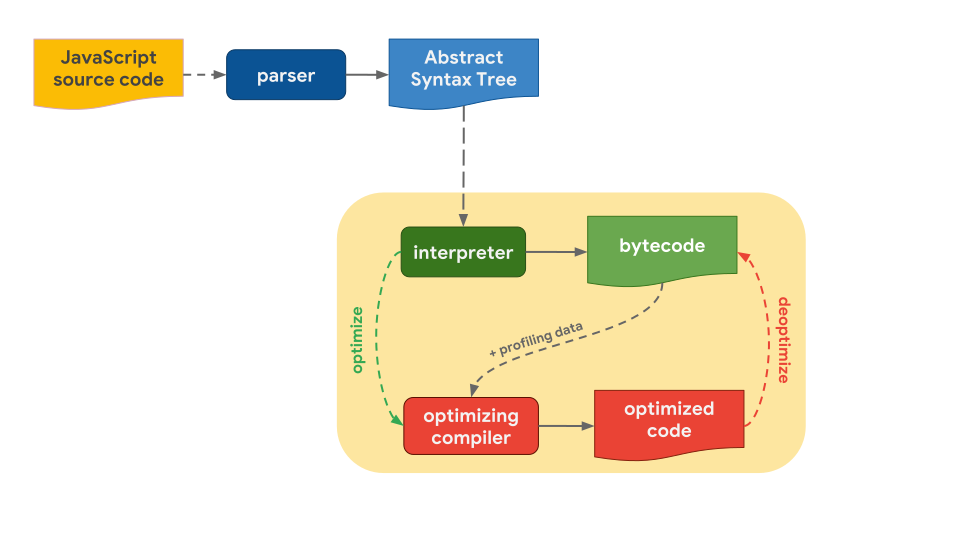
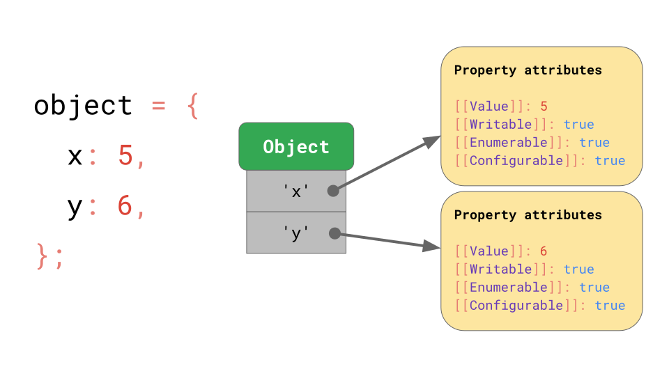
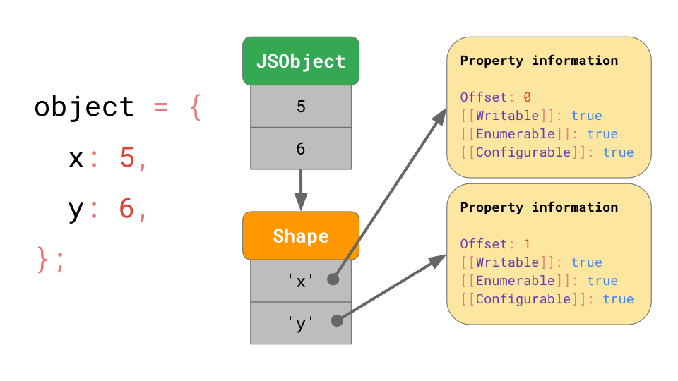
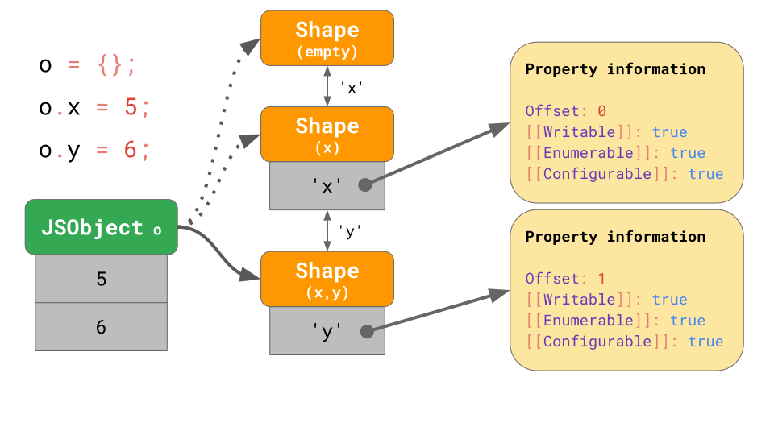
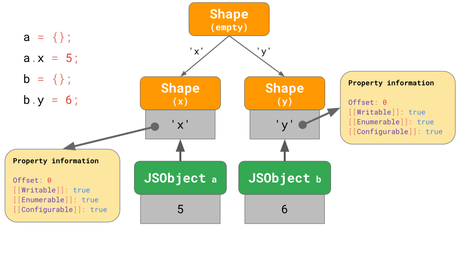
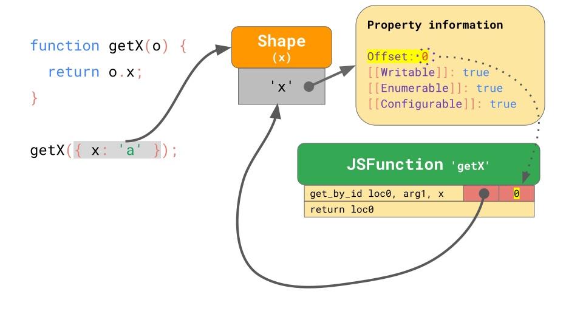
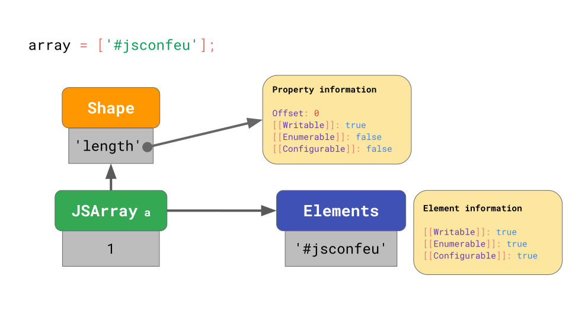
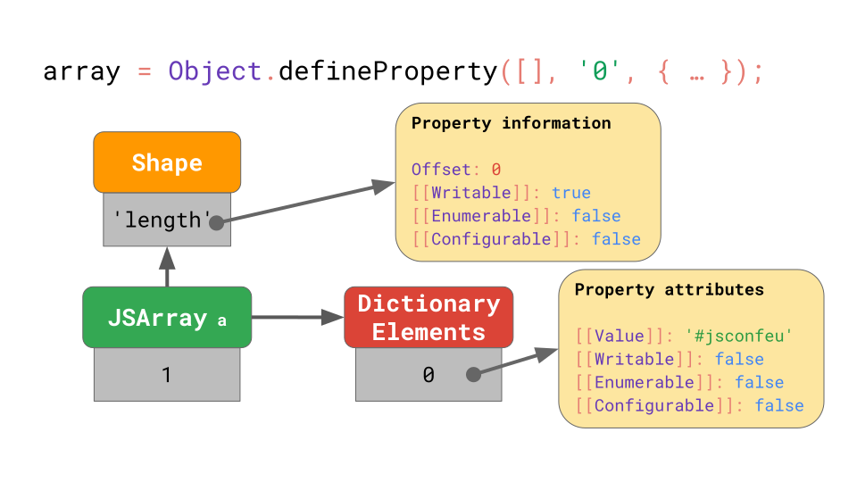

V8中形状和内联缓存是如何优化对象和数组的访问的
JavaScript 引擎工作流程
在 V8 中，JS引擎的工作流程如下，从源代码开始，由编译器解析成 AST，再交由解释器生成字节码。
为了使得代码运行的更快，V8 内部会将字节码和分析数据( profiling data ) 一起发送给 优化编译器，生成优化过的机器码。当生成的机器码在运行之前被假定为不正确的，会重新回退生成字节码。

- 一般的 JS 引擎都会有一个解释器和优化编译器。其中解释器可以快速生成为优化的字节码，优化编译器会使用更长的时间生成运行更快的机器码
- V8 的解释器被叫做 Ignition，优化编译器叫做Turbofan
JavaScript 对象模型(Object Model)
-
属性的访问
在 ECMA 的规范中，所有JavaScript 的对象的键值对都会映射到一个叫 property 的字典表中。

除 [[Value]] 外，规范还定义了如下属性：
-
[[Writable]]决定该属性是否可写 -
[[Enumerable]]决定对象是否可被遍历 -
[[Configurable]]决定该属性是否可被删除。参考 MDN 对象元属性。
[[ 双方括号 ]] 表示 引擎不会暴露给 JavaScript 的属性，但是可以通过 Object.getOwnPropertyDescriptor 来访问到。
在数组中也一样。数组就是特殊的对象。
-
属性访问的优化
在 JavaScript 中，对象的属性访问是最常见的操作，并且这个操作的速度将很大的影响程序运行的错误。
在实现上，引擎采用了一个形状（也叫 隐藏类）的机制。

具有相同属性名，并且顺序一样的对象会指向相同的 形状。形状记录了 除 [[value]] 以外的元信息，以及一个offset的整型属性。
而原本的对象只需要记录所有的值，存在一个列表中，访问时通过偏移量来访问即可。无论有多少个对象，只要它们具有相同的形状，我们只需要将它们的形状与键值属性信息存储一次 。
-
Transition 链和树
const object = {}; object.x = 5; object.y = 6;当代码中有这样的操作时，就会形成一个 transition链。
该对象在初始化时没有任何属性，因此它指向一个空的 shape。

下一个语句为该对象添加值为 5 的属性 “x”，所以 JavaScript 引擎转向一个包含属性 “x” 的 Shape，并向 JSObject 的第一个偏移量为0处添加了一个值 5。
接下来一个语句添加了一个属性 'y'，引擎便转向另一个包含 'x' 和 'y' 的 Shape，并将值 6 附加到 JSObject（位于偏移量 1 处）。
我们不需要为每个 Shape 存储完整的属性表。相反，每个 Shape 只需要知道它引入的新属性。
例如在此例中，我们不必在最后一个 Shape 中存储关于 `'x'` 的信息，因为它可以在更早的链上被找到。要做到这一点，每一个 Shape 都会与其之前的 Shape 相连。
const object1 = {};
object1.x = 5;
const object2 = {};
object2.y = 6;
而在这种情况下，我们必须进行分支操作。

形状的生成也并不意味着，总从空形状开始，这取决于一开始定义对象的值。
内联缓存(inline caches or ICs)
function getX(o) {
return o.x;
}
当有了形状的机制，就可以为函数的参数访问进行优化

getX会被解析为两条指令
get_by_id从第一个参数（arg1）中加载属性'x'值并将其存储到地址loc0中。return loc0返回我们存储到loc0中的内容。
引擎会将两个值嵌入到 get_by_id 指令中， shape 和偏移量。这样在下次查找参数的值时，如果形状没有发生改变，就可以直接通过偏移量来查找，跳过费时的属性信息查找，这比每次查找属性要快得多
高效存储数组
const array = [
'#jsconfeu',
];
考虑如上数组。

每个数组都有一个单独的 elements backing store，其中包含所有数组索引的属性值。JavaScript 引擎不必为数组元素存储任何属性特性，因为它们通常都是可写的，可枚举的以及可配置的。JavaScript 引擎利用这一点，将数组元素与其他命名属性分开存储。
由于上述操作将 数组元素的属性当做了默认的属性。所以讲数组元素放进 Elements 列表来处理。如果改变了数组元素的元属性呢
const array = Object.defineProperty(
[],
'0',
{
value: 'Oh noes!!1',
writable: false,
enumerable: false,
configurable: false,
}
);

不要这样做，这样会导致 数组的元素 存放在一个 字典表里面（Dictionary Elements），这种方式来查找数组元素是缓慢且低效的。
因为不是通过下标偏移量来查找，而是当做了类似于普通对象的键值对查找，每个下标都对应一个属性特性 ( property attributes )